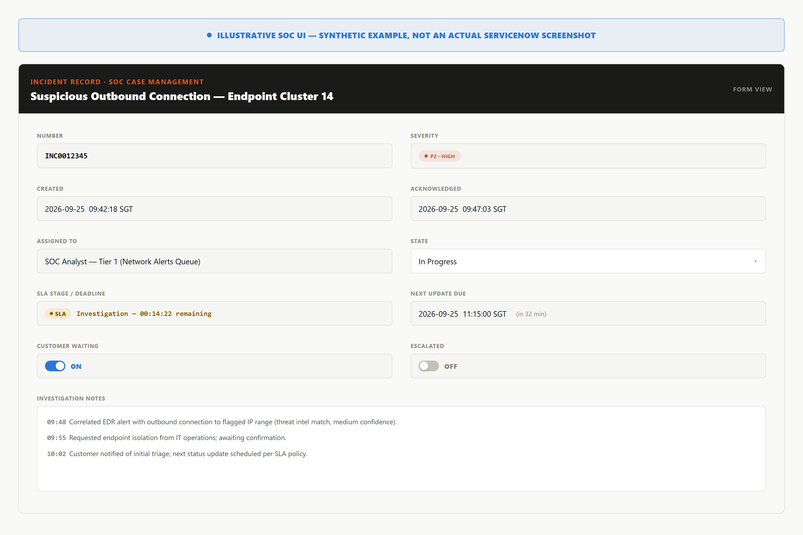

ServiceNow underlies much SOC case management, and its documentation is blunt: its "SLA" feature is a generic commitment-timer engine, and what it measures depends entirely on configuration, not the software.
Per ServiceNow Community discussion and the platform's own documentation, SLA, OLA, and UC records run on the same Task SLA engine — identical mechanics, differentiated only by an administrative Type field.
Every Task SLA record tracks a stage: In Progress, Paused, Completed, or Cancelled. Paused suspends elapsed time rather than discarding it — the clock resumes where it stopped, not zero.
ServiceNow computes breach against a planned end date that recalculates as paused time accumulates, not a fixed deadline — so identical records can close with different deadlines, a moving number no static severity table can show in advance.
The fields ServiceNow surfaces on a case are what a shift lead would check. An illustrative, reconstructed example:
| Field | Value (illustrative) |
|---|---|
| Case ID | INC0012345 |
| Severity | P2 · HIGH |
| Created | 2026-09-25 09:42:18 SGT |
| Acknowledged | 2026-09-25 09:47:03 SGT |
| Owner | SOC Analyst — Tier 1 |
| SLA deadline (planned end) | Investigation stage — 00:14:22 remaining |
| State | In Progress |
| Customer-waiting flag | ON |
| Escalation flag | OFF |
| Investigation notes | EDR alert correlated to flagged IP; isolation requested. |
| Next update due | 2026-09-25 11:15:00 SGT |
Case ID, timestamps, and notes are synthetic, not from a real tenant.

A pattern practitioners describe in ServiceNow forums and implementation guides: enforcing a response commitment that must survive a ticket being reopened often requires a custom Business Rule layered on top of the native Task SLA construct, which does not natively track commitments across reopen/close cycles.
None of this makes ServiceNow's engine poorly designed — one reusable timer, differentiated by Type, reasonably serves SLAs, OLAs, and UCs with one code path. The point holds regardless of platform: a field labeled "SLA" is a configuration object, not a certification that the number matches the contract. Reading it correctly requires knowing how the timer was built, not just what it displays.